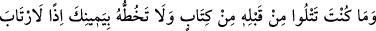
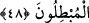
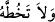
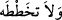
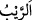
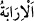
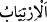

Bu hikaye uzun olduğu için özet olarak anlattık.
48. Sen bundan önce ne bir yazı okur, ne de sağ elinle onu yazardın. Öyle olsaydı,
bâtıla uyanlar kuşku duyarlardı.
Ey Muhammed! “Sen bundan” Kur’ân, sana nazil olmazdan “önce ne bir yazı okur,
ne de sağ elinle onu yazardın.” Yani, indirilen kitaplardan her hangi birini okumak
âdetin olmadığı gibi, yazmak da değildi. Sağ elinle de yazmadın. Herhangi bir kitap
veya hattan da med gibi bir şey yazıp çizmedin. Med; uzunluğu olan şeye denir. Hat ile
yazı (kitâbet) kasdedilmektedir.
“Sağ el”in zikredilmesi; genelde yazı, sağ el ile yazıldığı içindir. “Sağ el ile
yazmadın, sol el ile yazdın” demek değildir. Çünkü sol ile yazmak nâdirdir.
Şia der ki: Vahiyden önce Rasûlullah (s.a.) güzel yazı yazardı. Vahiy ile bundan
yasaklandı. Ve yine derler ki: “Yazmazdın” sözü, nehiydir; yani, “yazma!” demektir.
Dolyısıyla bu, daha önce yazı yazmadığını ortadan kaldırmaz.
Keşfü’l-esrâr’da der ki: “ ”nın fethası ile yâni (
) şeklinde nehiy olarak da
okunmuştur. Fakat bu okuyuş şekli, şâzz bir kıraattir. Sahîh olan, Rasûlullah (s.a.)’in
yazı yazmamış olmasıdır.
el-Es’iletü’l-mufhıme’de der ki: Şia’nın bu görüşü reddedilmiştir. Çünkü nehiy
kasdedilmiş olsaydı, “ ”nın nasb okunması gerekirdi veya muzaaf olması hasebiyle “
” şeklinde olurdu.
“Öyle olsaydı, bâtıla uyanlar kuşku duyarlardı.” Bu durumda, yâni okuma ve yazma
bilenlerden olsaydın, bâtıla uyanlar şüpheye düşerlerdi.
el-Muhtâr’da der ki: “
(Rayb)”, şekk, şüphe ve tereddüd demektir.
Râğıb Isfahânî der ki: “Rayb”, ortadan kalkabilen bir şüphe ve zannetmedir. Bu
yüzden Allah Teâlâ buyurmuştur ki: “Onda şek ve şüphe yoktur” (el-Bakara, 2/2).
“
” ise daha sonra giderilemeyecek şekilde şüphelenme ve zanna kapılmak
demektir. “
” da aynı anlamda kullanılmıştır. Allah Tealâ, müminlerden bu hâli
ortadan kaldırarak buyurmuştur ki: Kitap verilmiş olanlar ve mü’minler şüpheye
düşmesinler...” (el-Müddessir, 74/31)
“Mubtıl”, bâtılı getiren kimseye denir. Zıddı “muhıkk”tır; hakkı getiren kimse
demektir. Nitekim bâtıl da hakkın zıddıdır.
el-Müfredât’ta der ki: “İbtâl”, bazan hak veya bâtıl olan bir şeyi ortadan kaldırmak ve
yok etmek mânâsına gelir. Allah Teâlâ buyurur ki: “Hakkı gerçekleştirsin, batılı
ortadan kaldırsın...” (el-Enfal, 8/8) Bazan hakikatı olmayan şeyler söyleyen kimse